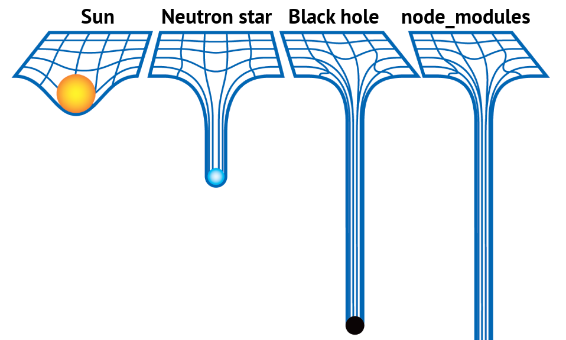

Europlayas & ¿Kumo?
VPN
Utilizamos OPENVPN y networkmanager-l2tp


gitlab

TOMCAT

Es un contenedor de servlets que se puede usar para compilar y ejecutar aplicaciones web realizadas en Java
¿Como instalar y configurar TOMCAT?
Para ello nos descargamos el .zip o lo instalamos en nuestro sistema
Configuracion


Configuracion de struts
Struts es un framework para construir aplicaciones web Java basadas en la filosofía MVC.
Para poder utilizar de forma comoda struts, se tiene que instalar su plugin

Oracle
Oracle
Hibernate
Hibernate
Archivos de configuración
Archivos de configuración
Archivos de configuración
Hibernate
Archivos de configuración
Configuración de entorno
Archivos de configuración
Configuración de logs
Archivos de configuración
POM
SQL developer
SQL developer
SQL developer
Amazon Web Service
Amazon Web Service
Amazon Web Service
Maven
Maven

Maven
Profiles
Profiles
local
aws
Angular
Angular

Angular
ng g [c|s|p] name
ng generate [component|service|pipe]
ng build --configuration=production
dist/ -> /var/www/b2b/
npm
npm

npm
npm install
npm i
npm
Redis
Redis
Redis
redis-cli
FLUSHALL